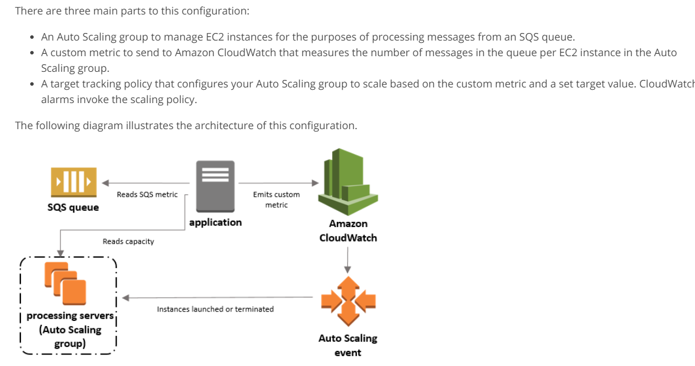
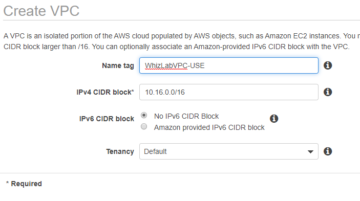
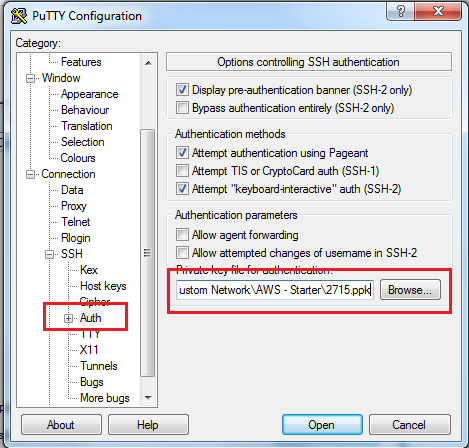

-

Attempt
29 -

Marks Obtained
0 / 65 -

Your score
0.0% -

Time Taken
00 H 00 M 12 S -

Result
Failed
| No | Domain | Total Question | Correct | Incorrect | Unattempted | Marked as Review |
|---|---|---|---|---|---|---|
|
|
|
|
|
|
|
|
|
|
|
|
|
|
|
|
|
|
|
|
|
|
|
|
|
|
|
|
|
|
|
|
|
|
|
|
|
|
|
|
|
|
|
|
|
|
|
|
Your company is planning on the following architecture for their application
- A set of EC2 Instances hosting the web part of the application.
- A relational database for the backend
- A Load balancer for distribution of traffic
- A NAT gateway for routing traffic from the database server to the Internet
Which of the following architecture ensure high availability across all components?
Answer – B
The AWS Documentation mentions the following
When you enable an Availability Zone for your load balancer, Elastic Load Balancing creates a load balancer node in the Availability Zone. If you register targets in an Availability Zone but do not enable the Availability Zone, these registered targets do not receive traffic. Note that your load balancer is most effective if you ensure that each enabled Availability Zone has at least one registered target.
We recommend that you enable multiple Availability Zones. (Note that with an Application Load Balancer, we require you to enable multiple Availability Zones.) With this configuration, if one Availability Zone becomes unavailable or has no healthy targets, the load balancer can continue to route traffic to the healthy targets in another Availability Zone.
In a Multi-AZ deployment, Amazon RDS automatically provisions and maintains a synchronous standby replica in a different Availability Zone. The primary DB instance is synchronously replicated across Availability Zones to a standby replica to provide data redundancy, eliminate I/O freezes, and minimize latency spikes during system backups. Running a DB instance with high availability can enhance availability during planned system maintenance, and help protect your databases against DB instance failure and Availability Zone disruption.
Option A is invalid because the Load balancer should have multiple subnets and EC2 Instances should be placed across multiple availability zones
Option C is invalid because the NAT gateway should be placed in multiple availability zone
Option D is invalid because the NAT gateway should be placed in multiple availability zone and EC2 Instances should be placed across multiple availability zones
For more information on Elastic Load Balancing , Multi-AZ and NAT gateway , please refer to the below URL’s
https://docs.aws.amazon.com/AmazonRDS/latest/UserGuide/Concepts.MultiAZ.html
https://docs.aws.amazon.com/vpc/latest/userguide/vpc-nat-gateway.html
Try now labs related to this question
-
This lab walks you through the steps to launch and configure a virtual machine in the Amazon cloud.
-
You will practice using Amazon Machine Images to launch Amazon EC2 Instances and use key pairs for SSH authentication to log into your instance. You will create a web page and publish it.
- Credit Needed10
- Time 0 : 30
Your company has an AWS account and a lot of resources defined in the Frankfurt region. They want to track the changes to the resources in their account. Which of the following should be used for this purpose?
Answer – A
The AWS Documentation mentions the following
AWS Config is a service that enables you to assess, audit, and evaluate the configurations of your AWS resources. Config continuously monitors and records your AWS resource configurations and allows you to automate the evaluation of recorded configurations against desired configurations. With Config, you can review changes in configurations and relationships between AWS resources, dive into detailed resource configuration histories, and determine your overall compliance against the configurations specified in your internal guidelines. This enables you to simplify compliance auditing, security analysis, change management, and operational troubleshooting.
Option B is invalid because this is an API monitoring service
Option C is invalid because this is a metric and logging service
Option D is invalid because is used to deploy stacks of resources
For more information on AWS Config , please refer to the below URL
CloudWatch and Config serve distinct use cases for monitoring and complements each other from AWS ecosystem.
Config is typically used for auditing and compliance purposes across organizations to verify whether AWS resource changes being made are per compliance rules. Some of the typical compliance rules are as follows:
- IAM user should be part of one of the IAM groups
- None of the S3 bucket should be publicly accessible
- EC2 resources should be launched in private subnets only, so that it cannot be accessed outside VPC
- Server access logging should be enabled on S3 buckets
- Certain IAM policy should not be modified or it should not be attached to any user. For e.g AdministratorAccess IAM policy
Above compliance rules vary from one organization to another depending upon legal agreements signed between organization/client and government/customers
CloudWatch is designed to provide performance information about AWS resources such as EC2, Lambda etc. Developers can use information from CloudWatch to identify bottlenecks in applications or workflows.
Cloudwatch will help you to send alerts when CPU /Memory utilization reaches a certain threshold and browse metrics associated with CPU/Network to identify operational and security issues , if any
Please find below sample config rule for S3 service:
Here is the screenshot, where you could see the changes/revisions made on one of the S3 buckets over a period of time
Cloudwatch would help to monitor AWS resource "metric/event" changes , however Cloudtrail is used for monitoring AWS resource "configuration" changes.
You are working for a Pharma company having operations in North America. Company has a corporate Data Centre in New York which includes Web Servers & Active Directory. As a part of migrating all services to the cloud, few services will be initially migrated to EC2 instance deployed in VPC at us-east-1 region. The Pharma company already has a managed AD server in AWS. You are planning to set up AWS SSO for this purpose so that users can sign in to AWS accounts using on-premise Active Directory credentials. You need to ensure that the proposed solution should consider the future growth of users and all users should be able to reset the password from anywhere.
Also, this highly available solution should be secure and ensure reliable performance over low latency connectivity between data center & on-premise location. What would be the most appropriate solution to meet this requirement?
Correct Answer – A
AWS SSO can connect to On-Premise Active Directory so that users in on-premise Active-Directory can use AWS SSO to access AWS accounts & resources. Since the company is looking for a solution with future growth, there would be a necessity of high bandwidth for which AWS Direct Connect connection between Data Centre & VPC will be a most appropriate solution.
- Option B is incorrect as with AD Connector, users will not be able to reset passwords from AWS SSO, but only from On-Premise Active Directory. With AD Connector, AWS SSO does not cache user information & forward all requests to On-Premise Active Directory.
- Option C is incorrect as In general, VPN connection frequently can’t support data transfer rates above 4 Gbps. Direct Connect connection between Data Centre and VPC will be a better option.
- Option D is incorrect as In general, VPN connection frequently can’t support data transfer rates above 4 Gbps. Direct Connect connection between Data Centre and VPC will be a better option. With AD Connector, users will not be able to reset passwords from AWS SSO, but only from On-Premise Active Directory. With AD Connector, AWS SSO does not cache user information and forward all requests to On-Premise Active Directory.
For more information on connecting AWS SSO to On-Premise Active Directory, refer to the following URLs:
https://docs.aws.amazon.com/singlesignon/latest/userguide/connectonpremad.html
https://docs.aws.amazon.com/directoryservice/latest/admin-guide/ms_ad_setup_trust.html
A company is planning on hosting an application with the below architecture
· A lambda function which reads metadata of objects from an S3 bucket
· The Lambda function then stores the metadata in DynamoDB and AWS RDS - MySQL
Which of the following needs to be in place to high availability of all components in the system?
Answer – C
The AWS Documentation mentions the following
In a Multi-AZ deployment, Amazon RDS automatically provisions and maintains a synchronous standby replica in a different Availability Zone. The primary DB instance is synchronously replicated across Availability Zones to a standby replica to provide data redundancy, eliminate I/O freezes, and minimize latency spikes during system backups. Running a DB instance with high availability can enhance availability during planned system maintenance, and help protect your databases against DB instance failure and Availability Zone disruption.
Option A is invalid because the S3 service is already a highly available service within a particular region
Options B and D are invalid because these are already a highly available services in AWS
For more information on Multi-AZ, please refer to the below URL
https://docs.aws.amazon.com/AmazonRDS/latest/UserGuide/Concepts.MultiAZ.html
Try now labs related to this question
This lab walks you through to the creation and testing of an Amazon Relational Database Service (Amazon RDS) database. We will create an RDS MySql Database and test the connection using MySQL Workbench.
- Credit Needed10
- Time 0 : 50
A company has a set of EC2 Instances hosting a revenue generating applications. Some of the data on the root EBS volumes are critical to retain. Hence it has to be ensured that even after the instances are terminated, the EBS volumes will still remain intact. Which of the following needs to be done to ensure this requirement can be met?
Answer – B
The AWS Documentation mentions the following
When an instance is terminated, Amazon Elastic Compute Cloud (Amazon EC2) uses the value of the DeleteOnTermination attribute for each root EBS volume to determine whether to preserve or delete the volume when the instance is terminated. By default, the DeleteOnTermination attribute for the root volume of an instance is set to true, but it is set to false for all other volume types.
To preserve the root volume when an instance is terminated, change the DeleteOnTermination attribute for the root volume to false.
Option A is invalid since the flag needs to be set on the EBS volume
Options C and D are invalid since these are really inefficient ways to manage the preservation of volumes
For more information on the Delete on termination flag, please refer to the below URL
https://aws.amazon.com/premiumsupport/knowledge-center/deleteontermination-ebs/
A company has a set of EC2 Instances hosted in a VPC. The IT Security department has specified that they need to ensure they get a list of IP addresses for all sources that are making requests to the EC2 Instances. Which one of the following could help achieve this requirement?
Answer – A
The AWS Documentation mentions the following
VPC Flow Logs is a feature that enables you to capture information about the IP traffic going to and from network interfaces in your VPC. Flow log data can be published to Amazon CloudWatch Logs and Amazon S3. After you've created a flow log, you can retrieve and view its data in the chosen destination.
Option B is invalid since this is a monitoring service which can only give metrics and not the detailed IP address tracing for traffic flowing into EC2 Instances
Option C is invalid since AWS CloudFormation is a service that helps you model and set up your Amazon Web Services resources so that you can spend less time managing those resources and more time focusing on your applications that run in AWS
Option D is invalid since this is only used as a recommendation service
For more information on VPC Flow logs, please refer to the below URL
https://docs.aws.amazon.com/vpc/latest/userguide/flow-logs.html
You are working as an AWS Architect for a financial company having intranet application hosted on AWS. They are using AWS SSO for granting access to users to AWS resources. During the annual security audit, Auditors have concerns on users sign-in process & prompted non-compliance for the security process when sign-in is observed from users using unknown locations or devices. Auditors are looking for enhancing security controls to be in place for such users. What would you use to improve the security process during user sign-in?
Correct Answer – D
For additional security, AWS SSO with two-step verification can be enabled. After two-step verification is enabled, post login with authorized email & password, users are prompted for additional verification code which they receive on their registered email address. With Context-aware two-step verification, AWS SSO analyzes user sign-in context such as browser, location, and devices. If any deviation is observed, only then it asks for the additional second level of verification code. With this, a user does not have to perform two-step verification repeatedly from the same device.
- Option A is incorrect as Verification code is sent over the registered email address, not as an SMS on the mobile device.
- Option B is incorrect as Verification code is sent over the registered email address, not as an SMS on the mobile device. Also, with Always-on Two-step verification, each time the user logs in to any cloud application, it would prompt for two-step verification code. This is true even if the user logs in from the same device.
- Option C is incorrect. With Always-on Two-step verification, each time the user logs in to any cloud application, it would prompt for two-step verification code. This is true even if the user logs in from the same device.
For more information on enabling two-step verification on AWS SSO, refer to the following URL:
https://docs.aws.amazon.com/singlesignon/latest/userguide/enable-two-step-verification.html
Your company has just started using the AWS RDS service. They have an application making requests to a MySQL instance on this service. Due to the sudden surge of high requests, you need to ensure that the backup activities on the database do not interfere with the normal operation of the database. Which of the following would help in this requirement?
In a Multi-AZ deployment, Amazon RDS automatically provisions and maintains a synchronous standby replica in a different Availability Zone. The primary DB instance is synchronously replicated across Availability Zones to a standby replica to provide data redundancy, eliminate I/O freezes, and minimize latency spikes during system backups. Running a DB instance with high availability can enhance availability during planned system maintenance, and help protect your databases against DB instance failure and Availability Zone disruption.
Additional note on failover process is given below ( this is in the additional feature when Multi-AZ is enabled )
Amazon RDS performs an automatic failover to the standby (or to a read replica in the case of Amazon Aurora) so that you can resume database operations as soon as the failover is complete. Since the endpoint for your DB Instance remains the same after a failover, your application can resume database operation without the need for manual administrative intervention.
The failover happens only in the following conditions:
1. An Availability Zone outage.
2. The DB instance server type is changed.
3. The operating system of the DB instance is undergoing software patching.
4. A manual failover of the DB instance was initiated using Reboot with failover.
Points to note:
⦁ No failover for DB operations: long-running queries, deadlocks or database corruption errors.
⦁ The endpoint is the same after failover (no URL change in application needed).
⦁ Multi-AZ is only within a single region, not cross-region.
Lower maintenance task is made on the standby which is then promoted to master database.
Back to the question
we are told that the backup operations should not interfere with the normal operation of the database. We know that during the backups, for instance taking snapshots, there is usually an I/O consumption that takes place. To avoid this when using a multi-AZ enabled RDS database engine, create a backup on the standby instance.
With the above explanation Option C is the right answer.
Try now labs related to this question
This lab walks you through to the creation and testing of an Amazon Relational Database Service (Amazon RDS) database. We will create an RDS MySql Database and test the connection using MySQL Workbench.
- Credit Needed10
- Time 0 : 50
A company has an application that needs to be hosted on an EC2 Instance. The general amount of throughput data will be in the range of 400-500 MiB/s from the application. Which of the following should be used as the storage type for the underlying EC2 Instance with Cost-effective manner?
Answer – C
When you want high throughput, you should choose using the Throughput Optimized EBS volume. The below snapshot from the AWS Documentation shows the features of the different types of volumes.
Because of the features mentioned , all other options are invalid
For more information on the EBS volume types, please refer to the below URL
https://docs.aws.amazon.com/AWSEC2/latest/UserGuide/EBSVolumeTypes.html
A company has setup their application in AWS. It consists of a web tier hosted on a set of EC2 Instances. These instances interact with a MongoDB database server located in a private subnet. The web tier also interacts with many service-based applications in the private subnet. A NAT Instance is being used to route traffic from the instances in the private subnet to the Internet. The IT Administrative team is now getting Cloudwatch alerts that the NAT Instance is going beyond its threshold value for Network Activity. Which of the following would you advise to increase the performance of this architecture?
Answer – C
The below snapshot from the AWS Documentation shows a partial comparison of the NAT Instance and NAT Gateway. You should consider using the NAT gateway for higher bandwidth requirements
Option A is incorrect since you should not change the architecture of the database or application servers since this would result in security issues
Option B is incorrect since this would still alleviate the current network issue
Option D is incorrect since the NAT instance should be used to route traffic to the Internet from the Instances in the private subnet
For more information on the comparison between NAT Instances and the NAT gateway, please refer to the below URL
https://docs.aws.amazon.com/vpc/latest/userguide/vpc-nat-comparison.html
Your company is currently hosting an application on their On-premise environment. The company has developed this application inhouse. Consulting companies then use this application via API calls. You now need to consider moving this application to AWS. Which of the following services would best be suited in the architecture design, which would also help deliver a cost-effective solution. Choose 2 answers from the options given below
Answer – A and B
The AWS Documentation mentions the following
AWS Lambda lets you run code without provisioning or managing servers. You pay only for the compute time you consume - there is no charge when your code is not running.
With Lambda, you can run code for virtually any type of application or backend service - all with zero administration. Just upload your code and Lambda takes care of everything required to run and scale your code with high availability. You can set up your code to automatically trigger from other AWS services or call it directly from any web or mobile app.
Amazon API Gateway is a fully managed service that makes it easy for developers to create, publish, maintain, monitor, and secure APIs at any scale. With a few clicks in the AWS Management Console, you can create an API that acts as a “front door” for applications to access data, business logic, or functionality from your back-end services, such as workloads running on Amazon Elastic Compute Cloud (Amazon EC2), code running on AWS Lambda, or any web application.
- Option C is incorrect since this is a configuration service available from AWS
- Option D is INCORRECT because EC2 would not be the best fit for using API calls for the application. Implementing API Gateway and Lambda would be a more cost-effective solution
- For more information on AWS Lambda and the API gateway, please refer to the below URL
Try now labs related to this question
This lab walks you through to Amazon DynamoDB features. In this lab, we will create a table in Amazon DynamoDB to store information and then query that information from the DynamoDB table.
- Credit Needed10
- Time 0 : 30
Your company is planning on the following architecture for their application
· A set of EC2 Instances hosting the web part of the application.
· A relational database for the backend
· A Load balancer for distribution of traffic
Now due to the critical nature of the data stored on the underlying EBS volumes for the EC2 Instances, it needs to ensure that the data is available in another region for disaster recovery purposes. Which of the following would you consider complying with this requirement?
Answer – C
The AWS Documentation showcases the use cases of EBS snapshots
Use Cases
- Geographic expansion: Launch your applications in a new region.
- Migration: Move an application to a new region, to enable better availability and to minimize cost.
- Disaster recovery: Back up your data and logs across different geographical locations at regular intervals. In case of disaster, you can restore your applications using point-in-time backups stored in the secondary region. This minimizes data loss and recovery time.
- Encryption: Encrypt a previously unencrypted snapshot, change the key with which the snapshot is encrypted, or, for encrypted snapshots that have been shared with you, create a copy that you own in order to restore a volume from it.
- Data retention and auditing requirements: Copy your encrypted EBS snapshots from one AWS account to another to preserve data logs or other files for auditing or data retention. Using a different account helps prevent accidental snapshot deletions, and protects you if your main AWS account is compromised.
Options A and D are incorrect, since you need to create a snapshot
Option B is incorrect since you cannot directly create a snapshot in another region
For more information on EBS Snapshot copy, please refer to the below URL
https://docs.aws.amazon.com/AWSEC2/latest/UserGuide/ebs-copy-snapshot.html
Try now labs related to this question
This lab walks you through creation of a snapshot of EC2 instance and launch a new EC2 instance using AMI of that snapshot.
- Credit Needed10
- Time 0 : 30
An application consists of a fleet of EC2 Instances. These Instances are launched in the Oregon region which consists of 3 availability zones (us-west-2a, us-west-2b, us-west-2c). This application needs 6 Instances running at all times. As an architect you need to distribute the instances in such a way that the application could still maintain its capacity if any one availability zone were to go down. Also, you need to ensure that the cost is kept to a minimum? Which of the following configurations would you consider?
Answer – B
So now let’s look at Option A
If any availability zone goes down, we will have a total of 12 instances running. This is an additional 6 over the requirement of the question and will result in a higher cost.
So now let’s look at Option C
If the availability zone us-west-2a goes down, then you will have only 4 instances running. His does not meet our minimum requirement for 6 instances running.
So now let’s look at Option D
if either us-west-2b or us-west-2c availability zone goes down, we will have a total of 9 instances running. This is an additional 3 over the requirement of the question and will result in a higher cost.
For more information on Regions and Availability zones, please refer to the below URL
https://docs.aws.amazon.com/AWSEC2/latest/UserGuide/using-regions-availability-zones.html
Try now labs related to this question
-
This lab walks you through the steps to launch and configure a virtual machine in the Amazon cloud.
-
You will practice using Amazon Machine Images to launch Amazon EC2 Instances and use key pairs for SSH authentication to log into your instance. You will create a web page and publish it.
- Credit Needed10
- Time 0 : 30
You have a set of EC2 Instances in a custom VPC. You have installed a web application and need to ensure that only HTTP and HTTPS traffic is allowed into the instance. Which of the following would you consider for this requirement?
Answer – A
The below snapshot from the AWS Documentation shows the security groups examples for web servers
- Options B and C are incorrect since the default option is to DENY all traffic
- Option D is incorrect since this would be a security issue
- For more information on VPC Security groups, please refer to the below URL
A company has an application defined with the following architecture
- A fleet of EC2 Instances which are used to accept video uploads from users.
- A fleet of EC2 Instances which are used to process the video uploads.
Which of the following would help architect an operationally excellent architecture?
Answer – B
This architecture is also given in the AWS Documentation

- Option A is incorrect the ideal approach is to scale the instances based on the size of queue.
- Options C and D are incorrect since you should be using SQS queues. SNS topics are used for notification purposes.
- For more information on using SQS queues for Autoscaling, please refer to the below URL
As per AWS,
You can use the number of messages stored in an SQS queue as an indicator of the amount of work that is waiting in line for eventual processing within an Auto Scaling Group comprised of a variable number of EC2 instances. Each SQS queue reports a number of metrics to CloudWatch at five minute intervals, including ApproximateNumberOfMessagesVisible. If your workload is spikey in nature, you may want to build an application that can respond more quickly to changes in the size of the queue.
Memory utilization metrics is a custom metric. For this, to work, you need to install Cloudwatch agent on the EC2 instances and need to aggregate the dimensions.
However, AWS already has a well-defined architecture based on SQS Queuelength being used for Autoscaling EC2 instances.
- For more information please refer:
A company has an application that currently processes a lot of data streams that need to be processed in real time. You need to process these streams and create dashboards based after the processing is complete. Which of the following can be used to help fulfil this requirement?
Answer - B
The AWS Documentation mentions the following
You can use Amazon Kinesis Data Streams to collect and process large streams of data records in real time. You can create data-processing applications, known as Kinesis Data Streams applications. A typical Kinesis Data Streams application reads data from a data stream as data records. These applications can use the Kinesis Client Library, and they can run on Amazon EC2 instances. You can send the processed records to dashboards, use them to generate alerts, dynamically change pricing and advertising strategies, or send data to a variety of other AWS services
- Option A is incorrect since this is a search service which is available in AWS
- Option C is incorrect since is used for getting data via SQL queries from data sources such as S3
- Option D is incorrect since is used for petabyte data storage
- For more information on AWS Data Streams, please refer to the below URL
A company has an Amazon Aurora cluster setup. They have setup a Lambda function which needs to insert records into a DynamoDB table. The Amazon Aurora cluster needs to invoke the Lambda as a stored procedure. Which of the following need to be in place for this setup to work. Choose 2 answers from the options given below
Answer – B and D
The below snapshot from the AWS Documentation shows what are the different steps required to ensure that the Lambda function has access to Amazon Aurora
Options A and C are incorrect since the configurations need to be the other way around
For more information on integrating AWS Lambda with Aurora, please refer to the below URL
https://docs.aws.amazon.com/AmazonRDS/latest/UserGuide/AuroraMySQL.Integrating.Lambda.html
Your application consists of a set of EC2 Instances which are spun up as part of an Autoscaling Group. These Instances need to access objects in an S3 bucket. Which of the following is the ideal approach to ensure this access is set in place?
Answer – B
Applications must sign their API requests with AWS credentials. Therefore, if you are an application developer, you need a strategy for managing credentials for your applications that run on EC2 instances. For example, you can securely distribute your AWS credentials to the instances, enabling the applications on those instances to use your credentials to sign requests, while protecting your credentials from other users. However, it's challenging to securely distribute credentials to each instance, especially those that AWS creates on your behalf, such as Spot Instances or instances in Auto Scaling groups. You must also be able to update the credentials on each instance when you rotate your AWS credentials.
We designed IAM roles so that your applications can securely make API requests from your instances, without requiring you to manage the security credentials that the applications use.
Option A is incorrect since using Access keys is the least secure option
Option C is incorrect since the IAM policy is not the right option , you have to use IAM Roles instead
Option D is incorrect since you need to use IAM Roles and not IAM Users
For more information on IAM Roles for EC2, please refer to the below URL
https://docs.aws.amazon.com/AWSEC2/latest/UserGuide/iam-roles-for-amazon-ec2.html
You are an architect for a company that is going to be hosting an application in AWS. They want to load balance the traffic based on which route the user chooses. The 2 possible routes for the application are /customer and /orders. Which of the following would you include in the design?
Answer – A
The below snapshot from the AWS Documentation shows the benefits of using the Application Load balancer
Options B and D are incorrect since we don’t have enough information on the question to decide on whether to use Docker containers or not.
Option C is invalid since Classic Load balancers will not fit the requirement for route-based load balancing
For more information on the Application Load Balancer, please refer to the below URL
https://docs.aws.amazon.com/elasticloadbalancing/latest/application/introduction.html
Your company is planning on the following architecture for their application
· A set of EC2 Instances hosting the web part of the application.
· A relational database for the backend using the AWS RDS MySQL service
· A Load balancer for distribution of traffic
There is a requirement to ensure that all data hosted in the database service is encrypted at rest. How can you achieve this requirement in the easiest manner?
Answer – B
The AWS Documentation mentions the following
You can encrypt your Amazon RDS instances and snapshots at rest by enabling the encryption option for your Amazon RDS DB instance. Data that is encrypted at rest includes the underlying storage for a DB instance, its automated backups, Read Replicas, and snapshots.
Options C and D are invalid because this is used for encryption of objects in S3.
Option A is incorrect since this can be easily achieved using the encryption feature for AWS RDS
For more information on Encryption for AWS RDS, please refer to the below URL
https://docs.aws.amazon.com/AmazonRDS/latest/UserGuide/Overview.Encryption.html
Try now labs related to this question
This lab walks you through to the creation and testing of an Amazon Relational Database Service (Amazon RDS) database. We will create an RDS MySql Database and test the connection using MySQL Workbench.
- Credit Needed10
- Time 0 : 50
Your company is planning on hosting an application that will be based on Docker containers. They need to setup an orchestration service that would automatically scale based on the load. As much as possible , the company does not want the burden of managing the underlying infrastructure. Which of the following can assist in this scenario?
Answer – A
The AWS Documentation mentions the following
Your Amazon ECS service can optionally be configured to use Service Auto Scaling to adjust its desired count up or down in response to CloudWatch alarms. Service Auto Scaling leverages the Application Auto Scaling service to provide this functionality. Service Auto Scaling is available in all regions that support Amazon ECS.
Amazon ECS publishes CloudWatch metrics with your service’s average CPU and memory usage. You can use these service utilization metrics to scale your service out to deal with high demand at peak times, and to scale your service in to reduce costs during periods of low utilization.
Options B and D are incorrect since this would involve a lot of manual maintenance
Option C is incorrect since Spot Instances are volatile and should not be used for the orchestration service
For more information on AWS ECS with Autoscaling, please refer to the below URL
https://docs.aws.amazon.com/AmazonECS/latest/developerguide/service-auto-scaling.html
Your team has an application hosted on AWS. This application currently interacts with a DynamoDB table which has the Read capacity set to 10. Based on recent cloudwatch alarms which indicated that throttling was occurring in the requests to the DynamoDB table. Which of the following would help ensure the issue was resolved now and also help ensure the issue does not occur in the future?
Answer – D
The AWS Documentation mentions the following
DynamoDB auto scaling uses the AWS Application Auto Scaling service to dynamically adjust provisioned throughput capacity on your behalf, in response to actual traffic patterns. This enables a table or a global secondary index to increase its provisioned read and write capacity to handle sudden increases in traffic, without throttling. When the workload decreases, Application Auto Scaling decreases the throughput so that you don't pay for unused provisioned capacity.
Option A is incorrect since the Elastic Load balancer in front of the DynamoDB table would be a wrong architecture decision
Option B is incorrect since this would only help in temporarily resolving the situation
Option C is incorrect since provisioning Write capacity would not help in this case
For more information on DynamoDB Autoscaling, please refer to the below URL
https://docs.aws.amazon.com/amazondynamodb/latest/developerguide/AutoScaling.html
Your team is developing Lambda functions. These functions would need to interact with databases belonging to different environments. Which of the following is the ideal approach to ensuring that the Lambda functions are designed in the right way to interact with Databases in multiple environments?
Answer – C
The AWS Documentation mentions the following
Environment variables for Lambda functions enable you to dynamically pass settings to your function code and libraries, without making changes to your code. Environment variables are key-value pairs that you create and modify as part of your function configuration, using either the AWS Lambda Console, the AWS Lambda CLI or the AWS Lambda SDK. AWS Lambda then makes these key value pairs available to your Lambda function code using standard APIs supported by the language, like process.env for Node.js functions.
You can use environment variables to help libraries know what directory to install files in, where to store outputs, store connection and logging settings, and more. By separating these settings from the application logic, you don't need to update your function code when you need to change the function behavior based on different settings.
For more information on AWS Lambda environment variables, please refer to the below URL
https://docs.aws.amazon.com/lambda/latest/dg/env_variables.html
Try now labs related to this question
This lab walks you through creation and usage of AWS Serverless service called AWS Lambda. In this lab, we will create a sample lambda function which is triggered on S3 Object upload event and makes a copy of that object on another S3 Bucket.
- Credit Needed10
- Time 0 : 30
Your team has been instructed to develop an application that will make use of a DynamoDB table. During the design stage, you have to provide inputs to ensure that an optimal strategy is employed for a high read and write expectancy on the underlying DynamoDB table. Which of the following would you consider?
Answer – B
The AWS Documentation mentions the following

For more information on how to choose your partition key wisely, please refer to the below URL
https://aws.amazon.com/blogs/database/choosing-the-right-dynamodb-partition-key/
Try now labs related to this question
This lab walks you through to Amazon DynamoDB features. In this lab, we will create a table in Amazon DynamoDB to store information and then query that information from the DynamoDB table.
- Credit Needed10
- Time 0 : 30
You are working as an AWS Architect for an enterprise customer. Users access Amazon S3 buckets to save all project-related documents and also use business applications like Office 365 for daily work activities. These applications need to be accessible from any device for a limited number of hours in the day.
They are using AWS SSO to centrally manage and control access to AWS resources. Users are complaining that after each hour, they are getting logout from console & need to re-login. You need to ensure that the User session is optimum based upon the time required to complete the activity. Which of the following can be set to meet this requirement?
Correct Answer – C
Permission sets can control time duration for user login to the AWS Console by setting session duration. Default Session duration is 1 hour while the maximum can be set to 12 hours. Post this session duration, the user is automatically logout.
- Option A is incorrect as maximum Session duration that can be set is 12 hours.
- Option B is incorrect. This will use predefined AWS managed policies since the requirement is for customized permission policy for session duration. Also, maximum Session duration that can be set is 12 hours.
- Option D is incorrect. This will use predefined AWS managed policies since the requirement is for customized permission policy for session duration.
For more information on Permission Set properties in AWS SSO, refer to the following URL:
https://docs.aws.amazon.com/singlesignon/latest/userguide/howtosessionduration.html
Your company has a set of applications hosted on AWS. Currently, the IT administrators manually check for the size of the databases to see if the space is getting over. Which of the following can be used to automate these checks?
Answer – B
The AWS Documentation mentions the following
Option A is incorrect since this is only used for API monitoring
Option C is incorrect since this is used for monitoring network traffic to your EC2 Instances
Option D is incorrect this only gives recommendations
For more information on monitoring for databases, please refer to the below URL
https://docs.aws.amazon.com/AmazonRDS/latest/UserGuide/MonitoringOverview.html
Try now labs related to this question
This lab walks you through the Creating Rules in the Events Section of Cloudwatch and adding a SNS target. It will tested using EC2 Instance state events
- Credit Needed10
- Time 0 : 30
Your company has an application hosted in AWS. This application consists of a web tier and database tier. The web tier is hosted on EC2 Instances. The database is hosted in the AWS RDS service. Recently performance issues have been encountered in the application and this is due to the advanced latency of requests due to the high number of read requests. Which of the following can be used to help resolve the issue?
Answer -D
The below diagram from the AWS Documentation shows the architecture of how ElastiCache can be used to reduce the latency of requests to the AWS RDS service

Option A is incorrect since this is used for high availability for the databases
Option B is incorrect since this will only divert the traffic but not reduce the load
Option C is incorrect since the Autoscaling Group would not reduce the latency of requests
For more information on ElastiCache use cases, please refer to the below URL
https://docs.aws.amazon.com/AmazonElastiCache/latest/red-ug/elasticache-use-cases.html
A Startup company is launching a three-tier application with Multicontainer Docker platform. This application needs to be integrated with Amazon RDS database instance. The application will be launched using AWS Elastic Beanstalk. As an AWS consultant for this company, you need to design the environment for blue/green deployment along with decoupled architecture in the production environment. What would you recommend for integrating Amazon RDS database with AWS Elastic Beanstalk?
Correct Answer – B
AWS Elastic Beanstalk provisions and configures all the AWS resources required to run and support your application. For Amazon RDS database instance to be launched in the production environment, best practice is to launch it outside AWS Elastic Beanstalk environment. It helps in having multiple environments connecting to a single database, using database types not supported with the integrated database, performing blue/green deployments. Also, the database instance remains up & running when AWS Elastic Beanstalk environment is terminated.
- Option A is incorrect as launching Amazon RDS in an AWS Elastic Beanstalk environment is suitable for test/development purpose & not for a production environment. If the AWS Elastic Beanstalk environment is terminated, the Amazon RDS database instance is also terminated.
- Option C is incorrect as launching Amazon RDS in an AWS Elastic Beanstalk environment is suitable for test/development purpose & not for the production environment.
- Option D is incorrect. When Amazon RDS instance is launched outside the AWS Elastic Beanstalk environment, best practice is to save the connection string in the Amazon S3 bucket.
For more information on launching Amazon RDS instance with AWS Elastic Beanstalk, refer to the following URLs:
https://docs.aws.amazon.com/elasticbeanstalk/latest/dg/using-features.managing.db.html
https://docs.aws.amazon.com/elasticbeanstalk/latest/dg/AWSHowTo.RDS.html
Your company has an application that has been developed and needs to be hosted on an EC2 Instance. The EC2 Instance is located in a private subnet and needs to access AWS Kinesis streams without passing into the Internet. How can you achieve this in the best manner possible?
Answer – D
The AWS Documentation mentions the following
You can use an interface VPC endpoint to keep traffic between your Amazon VPC and Kinesis Data Streams from leaving the Amazon network. Interface VPC endpoints don't require an internet gateway, NAT device, VPN connection, or AWS Direct Connect connection. Interface VPC endpoints are powered by AWS PrivateLink, an AWS technology that enables private communication between AWS services using an elastic network interface with private IPs in your Amazon VPC
Options A and B are incorrect since it is mentioned in the question that traffic should not go via the Internet
Option C is incorrect since this is mostly used for S3 and DynamoDB access from Instances in the private subnet
For more information on VPC Endpoints Interfaces, please refer to the below URL
A company is planning to store sensitive documents in an S3 bucket. They want to ensure that documents are encrypted at rest. They want to ensure they manage the underlying keys which are used for encryption but not the encryption/decryption process. Which of the following can be used for this purpose? Choose 2 answers from the options given below
Answer – A and E
The AWS Documentation mentions the following
Server-side encryption is about protecting data at rest. Using server-side encryption with customer-provided encryption keys (SSE-C) allows you to set your own encryption keys. With the encryption key you provide as part of your request, Amazon S3 manages both the encryption, as it writes to disks, and decryption, when you access your objects. Therefore, you don't need to maintain any code to perform data encryption and decryption. The only thing you do is manage the encryption keys you provide.
Options C is incorrect since here you will still not manage the complete lifecycle of the keys.
Options D is incorrect, because the maximum key policy document size is 32kb.
https://docs.aws.amazon.com/kms/latest/developerguide/limits.html
Option E is correct since your own keys can be uploaded to the Key management service.
https://aws.amazon.com/blogs/aws/new-bring-your-own-keys-with-aws-key-management-service/
For more information on Server side encryption with customer keys and Client side encryption, please refer to the below URL
Your company currently has the following architecture for their ecommerce application
· EC2 Instances hosting the application
· An Autoscaling group for the EC2 Instances
The users who use the application keep on complaining that the application is slow in the morning from 9:00 – 9:30, after which there are no issues which occur. Which of the following can be done to ensure the issue is not encountered during the morning times?
Answer – C
The AWS Documentation mentions the following
Scaling based on a schedule allows you to scale your application in response to predictable load changes. For example, every week the traffic to your web application starts to increase on Wednesday, remains high on Thursday, and starts to decrease on Friday. You can plan your scaling activities based on the predictable traffic patterns of your web application.
The other options will not work because the main issue is that the high-performance issues are because of the high number of users early in the morning. The option is to add a scheduled scaling policy to increase the number of servers before 9:00 itself to handle the high load.
For more information on scaling policies for Autoscaling, please refer to the below URL's
https://docs.aws.amazon.com/autoscaling/ec2/userguide/schedule_time.html
https://docs.aws.amazon.com/autoscaling/ec2/userguide/as-scale-based-on-demand.html#as-scaling-types
Try now labs related to this question
AWS Auto Scaling will automatically scale resources as needed to align to your selected scaling strategy, This lab walks you through to use Auto Scaling to automatically launch or terminate EC2’s instances based on user defined policies, schedules and health checks.
- Credit Needed10
- Time 0 : 55
A three-tier web application is running on AWS VPC in two availability zones as shown below. Here are the CIDR ranges for each subnet and the corresponding servers.
| Layer | EU-East-1a | EU-east-1b |
|---|---|---|
| Web server | 10.16.0.0/25 | 10.16.0.128/25 |
| Application Server | 10.16.1.0/25 | 10.16.1.128/25 |
| DB Server | 10.16.2.0/25 | 10.16.2.128/25 |
The DB server is running MySQL, which would run on its default port, should only allow access to Application Server tier and access from rest of the tiers should be denied.
Which inbound rule of Security Group on DB server need to be attached to meets this requirement?
Answer: C
The requirement here is to allow access from Application Tier to DB Tier. The other point to note here is that MySQL would run on its default port. The default port for MySQL is ‘3306’
Application Server tier IP's across two subnets are - 10.16.1.0/25 and 10.16.1.128/25 that is from 10.16.1.0 to 10.16.1.255 which is same as 10.16.1.0/24
Action Required here
Create A VPC
Now create 2 subnets inside this VPC
Similarly, create 2 more VPC for DB and 2 VPC for Application Type
thereafter in creating 1 Rule in SG for outbound to while listing for DB Layer and attach to the Application tier
Similarly, Crate one More SG and Create Inbound to whitelist Application Tier and attach to DB Tier
So we need to create the following rule in SG
So Our Option C is the best answer
Try now labs related to this question
-
Learn how to build Public and Private subnets from scratch.
-
VPC wizard will not be used. So every component required to build public and private subnets will be created and configured manually.
-
This will give an in-depth understanding of internal components of VPC and subnets.
- Credit Needed10
- Time 0 : 30
You are working as an AWS Architect for a global IT company that is using AWS EC2 instance for hosting their sessionless application. The development team has come up with a new version of this application which needs to be deployed in all EC2 instance across various regions. Which service can be used for an in-place upgrade?
Correct Answer – C
The in-place upgrade involves an application update on a live Amazon EC2 instance. For performing application updates on these instances, deployment content should be developed & saved in any repository like Amazon S3 buckets. AWS CodeDeploy can be used to automate application deployment using new versions from S3 buckets.
- Option A is incorrect as AWS CodePipeline is used to automate the release process for building, testing & deploying code based on the release process model.
- Option B is incorrect as these are live EC2 instance, AWS Elastic Beanstalk is not a correct option for performing application updates.
- Option D is incorrect as AWS CloudFormation is used to create templates that are used for creating resources required for the application deployment.
For more information on choosing deployment service for the in-place upgrade, refer to the following URL:
https://d0.awsstatic.com/whitepapers/overview-of-deployment-options-on-aws.pdf
You have just launched an EC2 instance, and get the following error message when you try to connect to it from a workstation running Windows 7.
Error: Server refused our key or No supported authentication methods available
What could be the reason for this error? (Select TWO)
Answer: A and E
There are two parts of the error message.
The first part is that ‘Server refused our key’
Putty: This is a CLI (Command Line Interface) tool in Windows. To log in to this Putty tool we need to have the keys in the Putty readable format which would have the extension of ‘.ppk’.
There is a tool called ‘PuttyGen’ by which we can convert our ‘.pem’ key to the ‘.ppk’ format and if we feed this key to the Putty tool we can log in to our respective instance.
Load the ‘.pem’ key in the ‘PuttyGen’ tool and use the ‘Save private key’ in the ‘PuttyGen’ to save the private key in ‘.ppk’ format.
Then load this key in the ‘Auth’ section of ‘Putty’ tool as shown below

The username should be provided in the ‘Data’ section as shown below
The second part of the error message is ‘No supported authentication methods available’.
Please refer to the below table for the AMI (Amazon Machine Images, which means the copy or the snapshot of an instance) and their corresponding usernames
|
S.No. |
AMI |
Username |
|
1 |
Linux |
ec2-user |
|
2 |
Centos |
centos |
|
3 |
Debian |
admin / root |
|
4 |
Fedora |
ec2-user / fedora |
|
5 |
RHEL |
ec2-user / root |
|
6 |
SUSE |
ec2-user / root |
|
7 |
UBUNTU |
ubuntu |
Therefore Option ‘A’ and ‘E’ are correct.
- Option ‘B’ is incorrect, as port ‘3389’ denotes RDP (Remote Desktop access)
- Option C is incorrect as port '389' denotes 'LDAP'
- Option ‘D’ is incorrect, as the login to AWS console is not at all related to the error message.
For more information, check out the following URLs:
https://docs.aws.amazon.com/AWSEC2/latest/UserGuide/putty.html
Try now labs related to this question
-
This lab walks you through the steps to launch and configure a virtual machine in the Amazon cloud.
-
You will practice using Amazon Machine Images to launch Amazon EC2 Instances and use key pairs for SSH authentication to log into your instance. You will create a web page and publish it.
- Credit Needed10
- Time 0 : 30
A company has a requirement to monitor API activity for audit purposes for their AWS account. This audit would be conducted in the future as well and should be applicable to all regions. How would you design your solution to meet the present and future needs?
Answer – B
The AWS Documentation mentions the following
When you create a trail that applies to all regions, CloudTrail records events in each region and delivers the CloudTrail event log files to an S3 bucket that you specify. If a region is added after you create a trail that applies to all regions, that new region is automatically included, and events in that region are logged.
Option A is incorrect since this is an overhead to enable it each time for every new region
Options C and D are incorrect since the AWS Config and AWS Inspector services are used for different purposes.
For more information on AWS CloudTrail, please refer to the below URL
https://docs.aws.amazon.com/awscloudtrail/latest/userguide/how-cloudtrail-works.html
Your team is planning on developing and deploying an application onto AWS with the following architecture
· A set of EC2 Instances in a VPC hosting the web tier
· A database hosted using the AWS RDS MySQL instance
Which of the following should ideally be set for users to be able to access the web application and for the web application to access the database. Choose 2 answers from the options given below?
Answer – A and D
The AWS Documentation gives an example of this scenario and the recommended security group rules

Option B is invalid since the database should not be exposed to the Internet
Option C is invalid since the database security group should allow incoming traffic on port 3306
For more information on this scenario, please refer to the below URL
https://docs.aws.amazon.com/vpc/latest/userguide/VPC_Scenario2.html
Try now labs related to this question
-
Learn how to build Public and Private subnets from scratch.
-
VPC wizard will not be used. So every component required to build public and private subnets will be created and configured manually.
-
This will give an in-depth understanding of internal components of VPC and subnets.
- Credit Needed10
- Time 0 : 30
In your AWS VPC, you need to add a new subnet that will allow you to host a total of 20 EC2 instances. Which IPv4 CIDR block would you use to achieve the same?
Correct Answer: A
To calculate the number of IP addresses for a CIDR (Classless Internet Domain Routing) block, we need to subtract the ‘bit length’ or the ‘prefix length’ of the CIDR block from number ‘32’. The ‘bit length’ or the ‘prefix length’ is simply the number following the ‘ / ‘ symbol in the CIDR block
A. Prefix Length is ‘27’
Therefore 32-27 = 5 and 2 ^ 5 (i.e 2 * 2 * 2 * 2 * 2) = 32
B. Prefix Length is ‘28’
Therefore 32-28 = 4 and 2 ^ 4 (i.e 2 * 2 * 2 * 2) = 16
C. Prefix Length is ‘29’
Therefore 32-29 = 3 and 2 ^ 3 (i.e 2 * 2 * 2) = 8
D. Prefix Length is ‘30’
Therefore 32-30 = 2 and 2 ^ 2 (i.e 2 * 2) = 4
For option ‘A’ we get ‘32’ IP addresses (or indirectly the number of instances to be provisioned) as shown above
Since the user has to provision ‘20’ EC2 instances, we need to go with option ‘A’ which is the only correct IPv4 CIDR block.
Option ‘B’ is incorrect because we get only ‘16’ IP address (or indirectly the number of instances to be provisioned )
Option ‘C’ is incorrect because it has “/29” netmask and the allowed block size should be between “/28” netmask and “/16” netmask
Option ‘D’ is incorrect because it has “/30” netmask and the allowed block size should be between “/28” netmask and “/16” netmask
A Company is currently hosting an application which connects to a MySQL AWS RDS Instance. Of late there have been many performance issues being encountered. After careful analysis, it has been determined that the issue is occurring as a result of similar queries being fired against the database. Which of the following can be added to the architecture to alleviate the performance issue?
Answer – B
The AWS Documentation mentions the following
Amazon ElastiCache offers fully managed Redis and Memcached. Seamlessly deploy, operate, and scale popular open source compatible in-memory data stores. Build data-intensive apps or improve the performance of your existing apps by retrieving data from high throughput and low latency in-memory data stores. Amazon ElastiCache is a popular choice for Gaming, Ad-Tech, Financial Services, Healthcare, and IoT apps.
Option A is incorrect since this is used for high availability of the database
Option C is incorrect since this will only distribute the load but not reduce it
Option D is incorrect since Cloudfront should be used with Web distributions
For more information on ElastiCache, please refer to the below URL
https://aws.amazon.com/elasticache/
You are working as an AWS Administrator for a media company. They are using AWS resources in various regions for broadcasting live sports matches. Multiple EC2 On-Demand, Spot & Reserved Instances are launched as per user traffic on a daily basis resulting in huge monthly charges. Top management is looking for customized analysis for these charges based upon various factors like month-wise, instance-wise to deep dive into the incurred cost. To meet this requirement, the accounts team is looking for a simpler way to analyze these charges and query this report. Suggest a cost-effective solution that can be set up with the least efforts.
Correct Answer – A
Amazon Athena is a serverless platform which can be used to analyze Cost & Usage Reports uploaded in Amazon S3 buckets. Using Athena, a customized query can be requested using standard SQL.
Option B is incorrect as this will result in additional admin work for Managing Amazon QuickSight.
Option C is incorrect as using a third-party tool to analyze cost & usage reports will be costly.
Option D is incorrect as this will incur additional admin work for Managing Amazon Redshift.
For more information on Analyzing Cost & Usage Reports using Amazon Athena, refer to the following URL,
https://docs.aws.amazon.com/awsaccountbilling/latest/aboutv2/setting-up-athena.html
A Company is currently hosting an application which connects to a MySQL AWS RDS Instance The application behaves fine when there are 20 lookups against the database. When the lookups start to increase, the performance of the application starts to degrade. Which of the following can be added to the architecture to alleviate the performance issue?
Answer – A
Option B is incorrect since this is used for high availability of the database
Option C is incorrect since Cloudfront is used for web distributions
Option D is incorrect since this is used for backups of databases
The AWS Documentation mentions the following
Amazon RDS Read Replicas provide enhanced performance and durability for database (DB) instances. This feature makes it easy to elastically scale out beyond the capacity constraints of a single DB instance for read-heavy database workloads. You can create one or more replicas of a given source DB Instance and serve high-volume application read traffic from multiple copies of your data, thereby increasing aggregate read throughput.
For more information on AWS Read Replica’s, please refer to the below URL
https://aws.amazon.com/rds/details/read-replicas/
Your company needs to develop an application that needs to have a login module in place. Their key requirement is to ensure that users can also use their current identities which they have with various providers such as facebook to log into the application. Which of the following can help you accomplish this?
Answer – A
The AWS Documentation mentions the following
Amazon Cognito provides authentication, authorization, and user management for your web and mobile apps. Your users can sign in directly with a user name and password, or through a third party such as Facebook, Amazon, or Google.
The two main components of Amazon Cognito are user pools and identity pools. User pools are user directories that provide sign-up and sign-in options for your app users. Identity pools enable you to grant your users access to other AWS services. You can use identity pools and user pools separately or together.
Option B is incorrect since this is a configuration service
Option C is incorrect since this is a messaging service
Option D is incorrect since this is a web application firewall service
For more information on AWS Cognito, please refer to the below URL
https://docs.aws.amazon.com/cognito/latest/developerguide/what-is-amazon-cognito.html
A mid-sized Fintech company is using AWS Organization to manage multiple AWS accounts created for each department. Each of the accounts has purchased a Reserved Instance & are running web applications on a mix of On-Demand & Reserved Instance pool. A default IAM policy is configured for all accounts. Due to high recurring cost, Management has appointed you as an AWS consultant to suggest recommendations to reduce cost. Post analysis, you suggested purchasing more Reserved Instance as compared to using On-Demand EC2 instance. How would you justify your recommendations to the management?
Correct Answer – B
RI Coverage Budget reports the number of instances that are part of the Reserved Instance. This helps you to get an alert when the number of instances covered by reservation falls below 50% of the total number of instances launched. This report can identify the instance which is consistently running using On-Demand instance & can be converted to Reserved Instance for cost savings. AWS Organization member accounts' owners can create a budget for individual accounts. AWS Organization Master account pays for usage incurred by all accounts in the organization.
Option A is incorrect since the company is using a default IAM policy, each member account owner needs to create a budget policy for individual accounts & not by master account.
Option C is incorrect as RI utilization Budget reports utilization of your RI instance & notify using SNS alerts when utilization is below a threshold value which will help you to determine if RI is underutilized. This will not report the percentage of instance covered under Reservations.
Option D is incorrect since the company is using a default IAM policy, each member account owner needs to create a budget policy for individual accounts & not by master account. Also, RI utilization report will not report the percentage of instance covered under Reservations.
For more information on creating AWS Budgets & grant access for creating Budgets, refer to the following URLs:
https://docs.aws.amazon.com/awsaccountbilling/latest/aboutv2/budgets-managing-costs.html
https://docs.aws.amazon.com/awsaccountbilling/latest/aboutv2/grantaccess.html
Your current architecture consist of a set of web servers that are spun up as part of an Autoscaling group. These web servers then communicate with a set of database servers. You need to ensure that the security groups of the database servers are set properly to accept traffic from the web servers. Which of the following is the best way to accomplish this?
Answer – C
The below example from the AWS Documentation also shows the Source of the database security group involving the ID of the web server security groups.
Options A and B are invalid or not the best practise. Since they are part of the Autoscaling Group , the IP addresses of the instances can change.
Option D is incorrect since normally you don’t specify the Instance ID in security Groups
For more information on the Security Groups for the VPC, please refer to the below URL
https://docs.aws.amazon.com/vpc/latest/userguide/VPC_Scenario2.html
Try now labs related to this question
-
Learn how to build Public and Private subnets from scratch.
-
VPC wizard will not be used. So every component required to build public and private subnets will be created and configured manually.
-
This will give an in-depth understanding of internal components of VPC and subnets.
- Credit Needed10
- Time 0 : 30
Your company needs to host an application on an EC2 Instance. There is a requirement based on the compliance rules for the application that you need to have control over the number of cores allocated to the application. Which of the following should be used in such a case?
Answer – B
The AWS Documentation mentions the following
When you launch instances on a Dedicated Host, the instances run on a physical server that is dedicated for your use. While Dedicated instances also run on dedicated hardware, Dedicated Hosts provide further visibility and control by allowing you to place your instances on a specific, physical server. This enables you to deploy instances using configurations that help address corporate compliance and regulatory requirements.
You have visibility of the number of sockets and physical cores that support your instances on a Dedicated Host. You can use this information to manage licensing for your own server-bound software that is licensed per-socket or per-core.
Because of what is mentioned in the AWS Documentation, all other options are invalid
For more information on Dedicated Hosts, please refer to the below URL
https://aws.amazon.com/ec2/dedicated-hosts/
Your company is planning to store sensitive documents in a bucket in the Simple Storage service. They need to ensure that all objects are encrypted at rest in the bucket. Which of the following can help accomplish this? Choose 2 answers from the options given below
Answer – A and D
Options B and C are incorrect since these options cannot be used to actually encrypt the objects
The AWS Documentation mentions the following
You have three mutually exclusive options depending on how you choose to manage the encryption keys:
- Use Server-Side Encryption with Amazon S3-Managed Keys (SSE-S3) – Each object is encrypted with a unique key employing strong multi-factor encryption. As an additional safeguard, it encrypts the key itself with a master key that it regularly rotates..
- Use Server-Side Encryption with AWS KMS-Managed Keys (SSE-KMS) – Similar to SSE-S3, but with some additional benefits along with some additional charges for using this service. There are separate permissions for the use of an envelope key (that is, a key that protects your data's encryption key) that provides added protection against unauthorized access of your objects in S3.
- Use Server-Side Encryption with Customer-Provided Keys (SSE-C) – You manage the encryption keys and Amazon S3 manages the encryption, as it writes to disks, and decryption, when you access your objects.
- For more information on Server - Side encryption, please refer to the below URL
- To know about default encrytpion (Option A) please refer the below URL.
Try now labs related to this question
This lab walks you through to Amazon Simple Storage Service. Amazon S3 has a simple web services interface that you can use to store and retrieve any amount of data, at any time, from anywhere on the web. In this lab we will demonstrate AWS S3 by creating a sample S3 bucket, uploading an object to S3 bucket and setting up bucket permission and policy.
- Credit Needed10
- Time 0 : 30
A global software company is using Amazon EC2 Reserved and On-Demand Instance for all project-related work. They are having different accounts created for each vertical like Finance, Project, HR which are managed individually by account owners in each vertical. Management is looking for options to decrease these recurring charges. How could the management save monthly billing charges without impacting the performance?
Correct Answer – C
Consolidated Billing combines usage from all the accounts & billing is generated based on the total usage. Services like Amazon EC2, Amazon S3, etc. have volume pricing tiers where the overall charges decrease with more usage volume.
Option A is incorrect. Although this will save the cost but will impact the performance.
Option B is incorrect as without Consolidate billing this feature is not possible. With Consolidated billing, unused Reserved Instance launched by an account can be used by other accounts.
Option D is incorrect as Budget will limit charges but will not provide discounts in services being used by various accounts.
For more information on Volume Discounts using Consolidated billing, refer to the following URL:
https://docs.aws.amazon.com/awsaccountbilling/latest/aboutv2/useconsolidatedbilling-discounts.html
A company is planning to host an active-active site. One site will be located in AWS and the other one on their On-premise data center. They need to ensure that traffic is distributed proportionately between both the sites. Which of the following routing policy would you use for this purpose?
Answer – D
The AWS Documentation mentions the following
Weighted routing lets you associate multiple resources with a single domain name (example.com) or subdomain name (acme.example.com) and choose how much traffic is routed to each resource. This can be useful for a variety of purposes, including load balancing and testing new versions of software.
To configure weighted routing, you create records that have the same name and type for each of your resources. You assign each record a relative weight that corresponds with how much traffic you want to send to each resource. Amazon Route 53 sends traffic to a resource based on the weight that you assign to the record as a proportion of the total weight for all records in the group
Option A is incorrect since this should be used when you want to configure standard DNS records
Option B is incorrect since this should be used when you want to route traffic to a resource when the resource is healthy or to a different resource when the first resource is unhealthy
Option C is incorrect since this should be used when you want to improve performance for your users by serving their requests from the AWS Region that provides the lowest latency.
For more information on a Routing policy, please refer to the below URL
https://docs.aws.amazon.com/Route53/latest/DeveloperGuide/routing-policy.html
Your company is planning to store sensitive documents in a bucket in the Simple Storage service. They want to keep the documents as private but serve content only to selected users based on a particular time frame. Which of the following can help you accomplish this?
Answer – C
The AWS Documentation mentions the following
A pre-signed URL gives you access to the object identified in the URL, provided that the creator of the pre-signed URL has permissions to access that object. That is, if you receive a pre-signed URL to upload an object, you can upload the object only if the creator of the pre-signed URL has the necessary permissions to upload that object.
All objects and buckets by default are private. The pre-signed URLs are useful if you want your user/customer to be able to upload a specific object to your bucket, but you don't require them to have AWS security credentials or permissions. When you create a pre-signed URL, you must provide your security credentials and then specify a bucket name, an object key, an HTTP method (PUT for uploading objects), and an expiration date and time. The pre-signed URLs are valid only for the specified duration.
Option A is incorrect since this is used for Cross origin access
Option B is incorrect since this is used for encryption purposes.
Option D is incorrect since this is used for versioning
For more information on pre-signed URL’s, please refer to the below URL
https://docs.aws.amazon.com/AmazonS3/latest/dev/PresignedUrlUploadObject.html
Try now labs related to this question
This lab walks you through to Amazon Simple Storage Service. Amazon S3 has a simple web services interface that you can use to store and retrieve any amount of data, at any time, from anywhere on the web. In this lab we will demonstrate AWS S3 by creating a sample S3 bucket, uploading an object to S3 bucket and setting up bucket permission and policy.
- Credit Needed10
- Time 0 : 30
A company currently is hosting a Redshift cluster. As part of the disaster recovery drill , you need to ensure that the cluster would be made available even if the primary region goes down. How can you accomplish this?
Answer - C
The AWS Documentation mentions the following
You can configure Amazon Redshift to automatically copy snapshots (automated or manual) for a cluster to another region. When a snapshot is created in the cluster’s primary region, it will be copied to a secondary region; these are known respectively as the source region and destination region. By storing a copy of your snapshots in another region, you have the ability to restore your cluster from recent data if anything affects the primary region.
Because this is clearly mentioned in the AWS Documentation , all other options are invalid.
For more information on working with snapshots, please refer to the below URL
https://docs.aws.amazon.com/redshift/latest/mgmt/working-with-snapshots.html
You are working as an AWS Architect for a global Pharma company. They have multiple accounts created in an organization & are using Consolidated billing. Account A has 6 reserved instances while Account B do not have any Reserved Instance. Based on the current utilization, Account A uses 4 Reserved Instance at any time. Account B uses On-Demand Instance for its Web-based application. What will be True with regards to discounts offered by the use of Consolidated billing?
Correct Answer – B
Consolidate Billing combines the usage of all Accounts within an organization & shares Reserved Instance between multiple accounts. This discount is valid only if the account which has purchased Reserved Instance is not using its all Instances & other accounts have launched Instance in same AZ as that of the account which has purchased this Instance.
Option A is incorrect. When Consolidated Billing is enabled, Reserved Instance is automatically shared between all accounts with condition that Instance is launched in same AZ where it was purchased. No prior approvals are required to be granted for this sharing.
Option C is incorrect as for Reserved Instance to be used by other accounts in the same organization, Instance should be launched in the same AZ and should not be part of the same VPC.
Option D is incorrect as to avail Reserved Instance discounts, each Account should use launch instance in the same AZ, not in the different AZ as being purchased by another account.
For more information on Automating Amazon EBS Snapshot Lifecycle, refer to the following URL:
https://docs.aws.amazon.com/awsaccountbilling/latest/aboutv2/consolidatedbilling-other.html
Your company currently has a set of web servers in a public subnet and database servers in the private subnet. You need to ensure administrators from your on-premises environment can access the database servers. Which of the following is a secure way to access the database servers?
Answer – B
The AWS Documentation mentions the following
A bastion host is a server whose purpose is to provide access to a private network from an external network, such as the Internet. Because of its exposure to potential attack, a bastion host must minimize the chances of penetration. For example, you can use a bastion host to mitigate the risk of allowing SSH connections from an external network to the Linux instances launched in a private subnet of your Amazon Virtual Private Cloud (VPC).
- Option A is incorrect since the bastion host needs to be in the public subnet
- Options C and D are incorrect since the NAT instance should not be used as a jump server to the database servers
- For more information on using a bastion host, please refer to the below URL
A company needs to access a service provided by a consultant company. The service from the consultant company and the application of the primary company exist in their respective VPCs. The VPC's are located in different regions. What are the steps that are needed to take to establish communication between these VPCs such that data should not traverse via the Internet? Choose 2 answers from the options below
Answer – A and C
- Option B is incorrect since for VPC Endpoint interfaces, they have to be in the same region
- Option D is incorrect since here the traffic will traverse via the Internet
The AWS Documentation mentions the following
A VPC peering connection is a networking connection between two VPCs that enables you to route traffic between them privately. Instances in either VPC can communicate with each other as if they are within the same network. You can create a VPC peering connection between your own VPCs, with a VPC in another AWS account, or with a VPC in a different AWS Region.
- For more information on AWS Direct Connect and VPC peering, please refer to the below URL
the 2 answers provided for the question are correct. Let me explain to you why?
1. Both Primary & Consultant company are existing within there own VPCs in different AWS Regions.
In order to have the connection among them, we create VPC Peering across the region.
Hence, Option A is correct answer.
- https://aws.amazon.com/about-aws/whats-new/2017/11/announcing-support-for-inter-region-vpc-peering/
- https://aws.amazon.com/blogs/aws/new-almost-inter-region-vpc-peering/
2. Please refer to the below link, section "Two VPCs with Multiple CIDRs Peered Together" for further details
Your team has deployed an application which consists of a web and database tier hosted on separate EC2 Instances. Both EC2 Instances are using General Purpose SSD for their underlying volume type. Of late, there are performance issues related to the read and writes of the database EC2 Instance. Which of the following could be used to alleviate the issue?
Answer – B
The Provisioned IOPS SSD EBS volume type is perfect for these types of workloads. The below excerpt from the documentation shows the key differences between the different volume types
Option A is incorrect since the primary issue is that the volume type is not correct
Option C is incorrect since networking is not an issue here
Option D is incorrect since this option is applicable for the AWS RDS service
For more information on EBS volume types, please refer to the below URL
https://docs.aws.amazon.com/AWSEC2/latest/UserGuide/EBSVolumeTypes.html
Your company currently stores documents in an S3 bucket. They want to transfer the files to a low-cost storage unit after a duration of 2 months to save on cost. Which of the following can be used to perform this activity automatically?
Answer – C
The AWS Documentation mentions the following
To manage your objects so that they are stored cost effectively throughout their lifecycle, configure their lifecycle. A lifecycle configuration is a set of rules that define actions that Amazon S3 applies to a group of objects. There are two types of actions:
- Transition actions—Define when objects transition to another storage class. For example, you might choose to transition objects to the STANDARD_IA storage class 30 days after you created them, or archive objects to the GLACIER storage class one year after creating them.
- Expiration actions—Define when objects expire. Amazon S3 deletes expired objects on your behalf.
Options B and D are incorrect because ideally you don’t transfer to EBS volumes – Cold HDD
Option A is incorrect because you need to use lifecycle policies
For more information on lifecycle policies, please refer to the below URL
https://docs.aws.amazon.com/AmazonS3/latest/dev/object-lifecycle-mgmt.html
Try now labs related to this question
This lab walks you through to Amazon Simple Storage Service. Amazon S3 has a simple web services interface that you can use to store and retrieve any amount of data, at any time, from anywhere on the web. In this lab we will demonstrate AWS S3 by creating a sample S3 bucket, uploading an object to S3 bucket and setting up bucket permission and policy.
- Credit Needed10
- Time 0 : 30
You are working as an AWS architect for a global financial company which offers real-time stock trading quotes to customers. You are using Kinesis Data Streams to process stock market feeds from stock exchanges & provide a real-time dashboard to the customers. During stock market hours, there are a large number of users accessing these dashboards while after market hours, there are very few users accessing these dashboards. The management team is looking for an optimum number of Kinesis Shards within Kinesis Data Streams. What would be a cost-effective solution with no performance impact and no additional management overload?
Correct Answer – A
AWS Application Auto scaling can be used to automatically scale Kinesis Streams. For this, CloudWatch can be used to monitor Kinesis Data Stream shard metrics. Based on the changes in these metrics, CloudWatch can initiate a notification to Application Auto Scaling. This will trigger an API Gateway to call Lambda Functions to increase/decrease the number of Kinesis Data Stream Shards based upon metric values.
- Option B is incorrect because Amazon Kinesis Scaling Utility is not a cost-effective solution.
- Option C is incorrect as Using Elastic Beanstalk along with Amazon Kinesis Scaling Utility will be more complex than using AWS Application Auto Scaling.
- Option D is incorrect as using UpdateShardCount will be a manual process which will incur additional admin work.
- For more information on Scaling Kinesis Data Streams using Application Auto Scaling, refer to the following URL:
You have currently contacted an AWS partner to carry out an audit for your AWS account. You need to ensure that the partner can carry out an audit on your resources. Which one of the following steps would you ideally carry out?
Answer - B
The AWS Documentation mentions the following
Cross-account IAM roles allow customers to securely grant access to AWS resources in their account to a third party, like an APN Partner, while retaining the ability to control and audit who is accessing their AWS account. Cross-account roles reduce the amount of sensitive information APN Partners need to store for their customers, so that they can focus on their product instead of managing keys. In this blog post, I explain some of the risks of sharing IAM keys, how you can implement cross-account IAM roles, and how cross-account IAM roles mitigate risks for customers and for APN Partners, particularly those who are software as a service (SaaS) providers.
Because this is clearly mentioned in the AWS Documentation , all other options are invalid
For more information on cross account roles, please refer to the below URL
You are working for a start-up company using Amazon DynamoDB for mobile applications. During performing POC for a new application, most of the cases are successfully executed, but for certain cases, Amazon DynamoDB is returning an error message. Development Team is asking for your help to verify this error message & suggest a solution for the same so that application logic can be modified. For which of the following HTTP 400 status code returned by Amazon DynamoDB, will you suggest the development team to resubmit the request from the application for successful execution? (Select Two.)
Correct Answer – C, F
ThrottlingException & LimitExceededException are part of HTTP status code 4xx. ThrottlingException is an error message generated when you are executing operations like CreateTable, UpdateTable, DeleteTable, very rapidly. LimitExceededException is an error message generated when you are doing concurrent control plane operations. Both error message can be resolved after trying the same request again.
Option A is incorrect as this exception is part of HTTP status code 4xx & for this error, you will need to fix errors before retrying. This error is generated when a table being requested does not exist or in CREATING state. Before retrying, you need to check if the table exists.
Options B & D are incorrect as these exceptions are part of HTTP status code 5xx which indicates issues at AWS end. AWS should take corresponding actions from their end.
Option E is incorrect as this exception is part of HTTP status code 4xx & for this error, you will need to fix errors before retrying. This error is generated when a condition being process is failed before moving to the next query.
For more information, refer to the following URL,
https://docs.aws.amazon.com/amazondynamodb/latest/developerguide/Programming.Errors.html
Please refer to page 222 and 223 of the below link
https://docs.aws.amazon.com/amazondynamodb/latest/developerguide/dynamodb-dg.pdf
Try now labs related to this question
This lab walks you through to Amazon DynamoDB features. In this lab, we will create a table in Amazon DynamoDB to store information and then query that information from the DynamoDB table.
- Credit Needed10
- Time 0 : 30
Your company is planning on making use of the Elastic Container service for managing their container-based applications. They are going to process both critical and non-critical workloads with these applications. Which of the following COST effective setup would they consider?
Answer – B
The AWS Documentation mentions the following
A Spot Instance is an unused EC2 instance that is available for less than the On-Demand price. Because Spot Instances enable you to request unused EC2 instances at steep discounts, you can lower your Amazon EC2 costs significantly. The hourly price for a Spot Instance is called a Spot price. The Spot price of each instance type in each Availability Zone is set by Amazon EC2, and adjusted gradually based on the long-term supply of and demand for Spot Instances. Your Spot Instance runs whenever capacity is available and the maximum price per hour for your request exceeds the Spot price.
Options A and C are incorrect since Spot Instances can be taken back or interrupted and should not be used for critical workloads
Option D is not cost effective. You can use Spot Instances for non-critical workloads
For more information on Spot Instances, please refer to the below URL
https://docs.aws.amazon.com/AWSEC2/latest/UserGuide/using-spot-instances.html
Your company is planning on setting up an application that will consists of a web layer. This web layer will consist of EC2 Instances sitting behind an Application Load Balancer. The company wants to protect the application against application level attacks. Which of the following can be used for this purpose?
Answer – B
The AWS Documentation mentions the following
You use AWS WAF to control how Amazon CloudFront or an Application Load Balancer responds to web requests. You start by creating conditions, rules, and web access control lists (web ACLs). You define your conditions, combine your conditions into rules, and combine the rules into a web ACL.
Option A is invalid because this is used for content delivery
Option C is invalid because this is a configuration service
Option D is invalid because this is used to just block traffic based on simple rules
For more information on how the AWS WAF works, please refer to the below URL
https://docs.aws.amazon.com/waf/latest/developerguide/how-aws-waf-works.html
Your company is planning on setting up an application that will consist of a presentation layer and a datastore in DynamoDB. The data in DynamoDB will only used frequently within the week in which the data is inserted. After a week, the data would tend to become stale. But the stale data would need to be available on durable storage for future analysis on historical data. Which of the following would be the ideal implementation steps for this sort of architecture? Choose 2 answers from the options given below
Answer – B and D
The AWS Documentation mentions the following
AWS Data Pipeline is a web service that you can use to automate the movement and transformation of data. With AWS Data Pipeline, you can define data-driven workflows, so that tasks can be dependent on the successful completion of previous tasks. You define the parameters of your data transformations and AWS Data Pipeline enforces the logic that you've set up.
Option A is invalid because this would be an inefficient way to handle the data. You will be using too much throughput in the scan process.
Option C is invalid because EBS volumes is not durable storage
For more information on DynamoDB best practises and AWS Data Pipeline, please refer to the below URL
https://docs.aws.amazon.com/datapipeline/latest/DeveloperGuide/what-is-datapipeline.html
https://docs.aws.amazon.com/amazondynamodb/latest/developerguide/best-practices.html
Try now labs related to this question
This lab walks you through to Amazon DynamoDB features. In this lab, we will create a table in Amazon DynamoDB to store information and then query that information from the DynamoDB table.
- Credit Needed10
- Time 0 : 30
A company is going to setup an application that will be based on Docker based containers. The containers will be setup in the Elastic Container Service. You need to also setup load balancing for the underlying services which are based on dynamic port values. Which of the following would be the ideal service to use for this purpose?
Answer - D
The AWS Documentation mentions the following
Application Load Balancers offer several features that make them attractive for use with Amazon ECS services:
- Application Load Balancers allow containers to use dynamic host port mapping (so that multiple tasks from the same service are allowed per container instance).
- Application Load Balancers support path-based routing and priority rules (so that multiple services can use the same listener port on a single Application Load Balancer).
For more information on Service Load balancing, please refer to the below URL
https://docs.aws.amazon.com/AmazonECS/latest/developerguide/service-load-balancing.html
You have an architecture which consists of a set of web servers in the public subnets. And database servers in the private subnet along with a NAT instance. The NAT instance is now becoming a bottleneck and you are looking to replace it with a NAT gateway. Which of the following would ensure a high availability setup for the NAT device?
Answer – B
The AWS Documentation mentions the following
If you have resources in multiple Availability Zones and they share one NAT gateway, in the event that the NAT gateway’s Availability Zone is down, resources in the other Availability Zones lose internet access. To create an Availability Zone-independent architecture, create a NAT gateway in each Availability Zone and configure your routing to ensure that resources use the NAT gateway in the same Availability Zone.
- Option A is invalid since this is a requirement for the NAT instance to function and will not satisfy the requirement for the question
- Option C is invalid since you should just use one type of device
- Option D is invalid since you should achieve redundancy via Availability Zones
- For more information on the NAT gateway, please refer to the below URL
Your company is planning on setting up an application with the following architecture
- A set of EC2 Instances hosting a web application.
- The application will sit behind an Elastic Load balancer
- The users will access the application from the internet via the Elastic Load balancer
- The application will connect to a backend database server
- A NAT Gateway is also implemented
Which of the following is the right architecture for the network, keeping high availability and security in mind?
Answer – B
You need to have public subnets for the Elastic Load balancer to ensure that traffic can flow via the Internet
The Web servers can be in the Private subnet since the communication between the instances and the ELB happens via the private IP and also it provide better security for the Web Servers.
The database servers should be in the private subnet since it does not need to communicate with the Internet
- Option A is invalid since the ELB is in the Public subnet, there is no need to place the Web Server in the Public subnet because ELB and Web Server communicate via Private IP.
- Option C is invalid since the database servers don’t need to be in the public subnet
- Option D is invalid since the database servers don’t need to be in the public subnet
- For more information on Elastic Load balancing, please refer to the below URL
Note: There is no requirement for ec2 instances to be in public subnet as route53 will route the request to elb whose endpoint is exposed as lb(Load Balancer) is in public subnet and the communication between elb and ec2 instances happen via private ip. So its better for security purpose.
reate an Internet-Facing Load Balancer
When you create a load balancer in a VPC, you can make it an internal load balancer or an Internet-facing load balancer. You create an Internet-facing load balancer in a public subnet. Load balancers in EC2-Classic are always Internet-facing load balancers.
When you create your load balancer, you configure listeners, configure health checks, and register back-end instances. You configure a listener by specifying a protocol and a port for front-end (client to load balancer) connections, and a protocol and a port for back-end (load balancer to back-end instances) connections. You can configure multiple listeners for your load balancer.
Try now labs related to this question
This lab walks you through AWS Elastic Load Balancing. Elastic Load Balancing automatically distributes incoming application traffic across multiple Amazon EC2 instances in the cloud. In this lab, we will demonstrate elastic load balancing with 2 EC2 Instances.
- Credit Needed10
- Time 0 : 30
You are working as an AWS consultant for a Bio-technology company that is working on the Human genome data processing. They are using HDFS to process this large amount of data. They are planning to migrate these systems to AWS Instance where 50 x EC2 C5 instance will be used to compute data. This is a critical project where any failure will result in huge financial loss. Company is seeking your recommendation for the best solution to avoid correlated failures. Which ways can be used to limit the impact of any Hardware failure in this scenario? (Select two)
Correct Answer – A and D
Partitioned Placement Groups is a logical group of instances where each instance does not share the same underlying hardware across different partitions. The EC2 instances are evenly distributed across the number of partitions specified during launch.
- Option B is incorrect as Cluster Placement Group has all instances in that group, sharing the same underlying hardware. Although it will provide low latency & high throughput, it's not suitable for the request scenario, where the customer is looking for a solution to limit the impact of single hardware failure.
- Option C is incorrect as Spread Placement Group have instances spread across all distinct underlying hardware. Maximum number of Instances supported per AZ for Spread Placement Groups are seven.
For more information on Partition Placement Groups, refer to the following URL:
Try now labs related to this question
-
This lab walks you through the steps to launch and configure a virtual machine in the Amazon cloud.
-
You will practice using Amazon Machine Images to launch Amazon EC2 Instances and use key pairs for SSH authentication to log into your instance. You will create a web page and publish it.
- Credit Needed10
- Time 0 : 30
An application needs to be set up on AWS. It consists of several components. Two primary components are required to run for 3 hours every day. The other components are required every day for more than 6-8 hours. Which of the following would you use to ensure COSTS are minimized for the underlying EC2 Instances?
Please select :
Answer – D
The AWS Documentation mentions the following
Reserved Instances provide you with a significant discount compared to On-Demand Instance pricing. Reserved Instances are not physical instances, but rather a billing discount applied to the use of On-Demand Instances in your account. These On-Demand Instances must match certain attributes in order to benefit from the billing discount.
On-Demand Instances – Pay, by the second, for the instances that you launch.
- Option A is incorrect since the primary component just runs for 3 hours and also keeping minimal costs in mind, On-demand instances would be the correct choice here (since using reserved instances incur upfront costs)
- Options B and C are incorrect since we don’t know the type of workload to decide whether Spot Instances are required
- For more information on On-Demand and Reserved Instances, please refer to the below URL